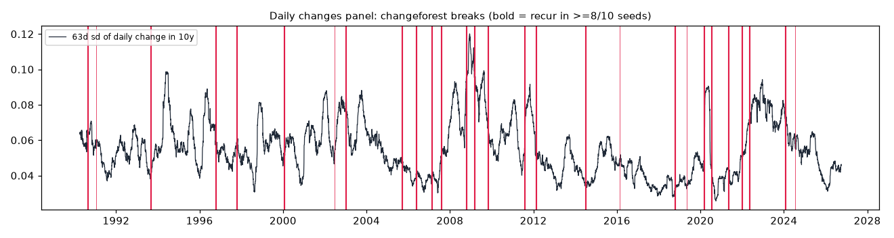

Daily volatility and correlation regimes in 9,174 days of rates and VIX
28 breaks, 23 stable across seeds, zero under both nulls, zero for a mean-change test: this is the use changeforest is built for.
methods/changeforest/APPROVAL.md (workflow, Stage 4b). Until then the skill it feeds is a DRAFT.The short version
- 9,174 daily changes of log VIX, 10y–2y, 2y and 10y (1990–2026) split into 28 segments. 23 of the 28 breaks recur in at least 8 of 10 seeds.
- The nulls give zero breaks: iid shuffle 0/0/0, stationary VAR(1) 0/0/0 (radius 0.50). The mean-change test also gives 0. Every number reproduced exactly.
- The segments separate calm and stressed volatility, and flips in how VIX and the 10y yield move together.
Question
At daily frequency, when did the volatility of rates and the stock-vol/rates correlation change regime?
Data used
Drive FRED files VIXCLS, T10Y2Y, DGS2 and DGS10 (retrieved 2026-11-10; see manifest.json). Daily changes of log VIX and the three rates, with rows beyond the 99.99th percentile of |change| trimmed and the rest z-scored. n = 9,174 days, 1990 → 2026-10.
What we ran
methods/changeforest/applications/2/run.py runs random_forest with binary segmentation, plus change_in_mean, 3 iid shuffles (replaying the scout's RNG stream), seeds 0–9 at ±63 trading days, 3 VAR(1) simulations, and a synthetic scaling benchmark with one variance break at n/2.
Figures and tables

| segment | days | sd Δ10y | corr(Δlog VIX, Δ10y) |
|---|---|---|---|
| 2007-08-07 → 2008-10-21 | 303 | 0.078 | −0.49 |
| 2008-10-22 → 2009-03-10 | 94 | 0.103 | −0.33 |
| 2011-08-03 → 2012-02-16 | 135 | 0.073 | −0.56 |
| 2016-02-22 → 2018-10-17 | 666 | 0.038 | −0.24 |
| 2020-03-06 → 2020-07-17 | 93 | 0.075 | −0.38 |
| 2022-05-19 → 2024-02-05 | 426 | 0.078 | +0.13 |
| 2024-02-06 → 2024-07-16 | 111 | 0.058 | +0.26 |
All 29 segments
See B3_segments in results.json.
Original vs reproduced
| number | original | reproduced |
|---|---|---|
| breaks | 28 | 28, same dates |
| change-in-mean breaks | 0 | 0 |
| iid shuffles (3×) | 0,0,0 | 0,0,0 |
| synthetic break located (n = 1k…16k) | 500, 1000, 2006, 4003, 8009 | same |
Robustness
- Seeds: 28–36 breaks; 23 of 28 recur in at least 8 of 10.
- Stationary VAR(1) null: 0, 0, 0 (radius 0.50): passes.
- Baseline: change-in-mean finds nothing, so every break here is in variance or correlation.
Limitations
- Volatility clustering within a segment is only partly absorbed. Short spikes can be merged into neighbouring segments.
- The VAR(1) null has constant variance. A GARCH-type null would be a stricter test, and isn't done yet.
Takeaway
Daily changes with low persistence are where changeforest is strongest. It adds information a mean test can't see, and it runs fast at n ≈ 9k.
Back to the method
changeforest: a random forest that dates regime breaks, once you stop feeding it levels
Rust-core change-point detection that sees volatility and correlation breaks a mean test misses. Reproduced exactly in all three applications; recommended for promotion with a mandatory persistence check, awaiting Jared's approval.